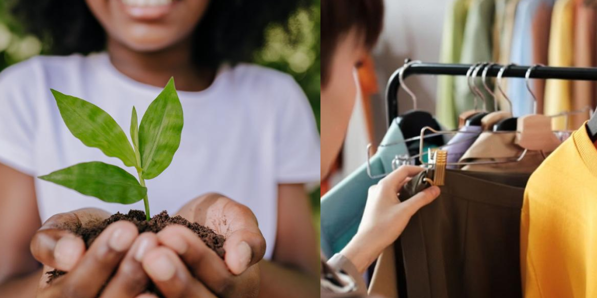
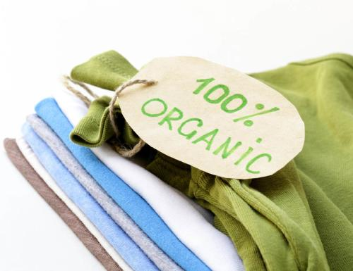
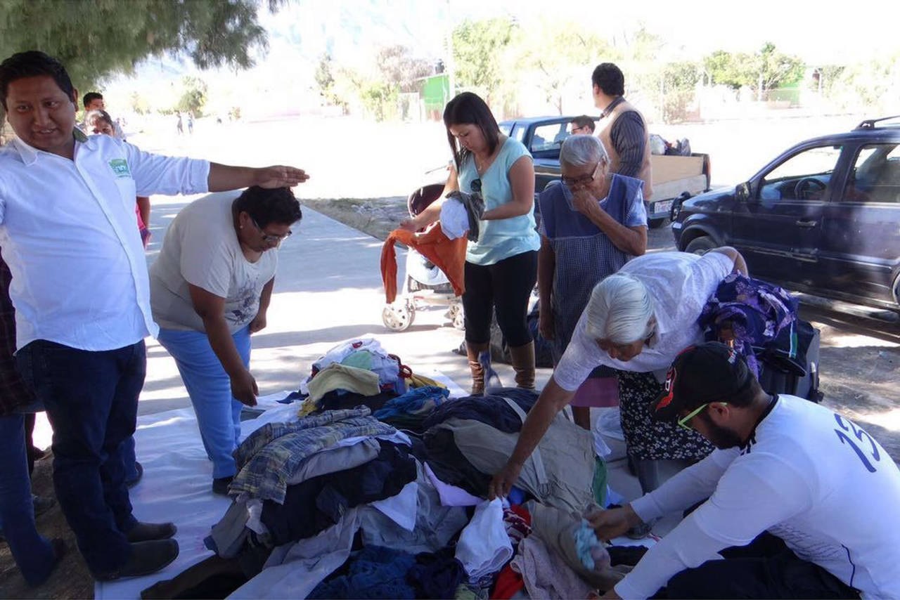

En Estilo Urbano, creemos que el futuro de la moda está en el respeto por el planeta. Nuestra línea sostenible nace del deseo de ofrecer prendas modernas, duraderas y responsables con el medio ambiente y la sociedad.
Usamos algodón orgánico, fibras recicladas y materiales veganos certificados. Esto reduce el uso de pesticidas, agua y emisiones de carbono en la producción.
Nuestras fábricas están comprometidas con la eficiencia energética, el uso responsable del agua y tintes libres de tóxicos. Reducimos desperdicios y priorizamos producción local.
Trabajamos con cooperativas textiles y garantizamos condiciones laborales dignas. El 30% de nuestra producción proviene de iniciativas de reinserción laboral.

Desde camisetas básicas hasta chaquetas urbanas, nuestras prendas sostenibles no sacrifican estilo por ética. Cada pieza cuenta con trazabilidad y etiquetas con información del impacto ambiental de su fabricación.

Colaboramos con pequeños productores, promovemos el comercio justo y donamos parte de nuestras ganancias a programas ambientales y sociales. Queremos que cada compra tenga un propósito.